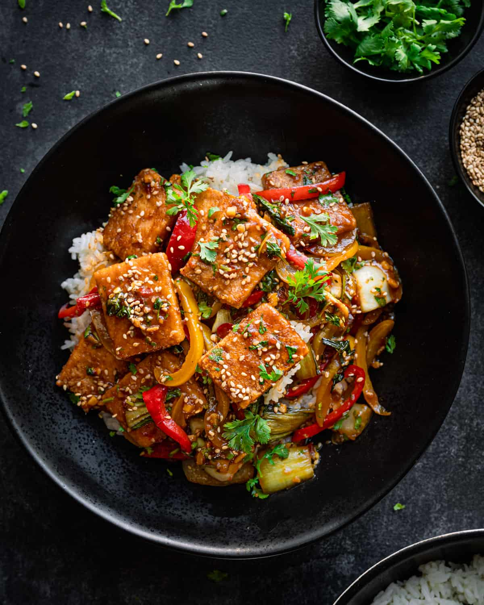

Crispy Tofu Bowl

Back to Recipes
A simple sattvic-friendly tofu bowl with seasonal greens and light dressing.
Ingredients
- 200g firm tofu, cubed
- 1 cup cooked quinoa
- Mixed seasonal greens
- 1 tbsp olive oil
- Salt & pepper to taste
Steps
- Press and cube the tofu. Season lightly.
- Pan-fry tofu in olive oil until golden.
- Assemble quinoa, greens and tofu. Drizzle dressing.
- Serve warm.